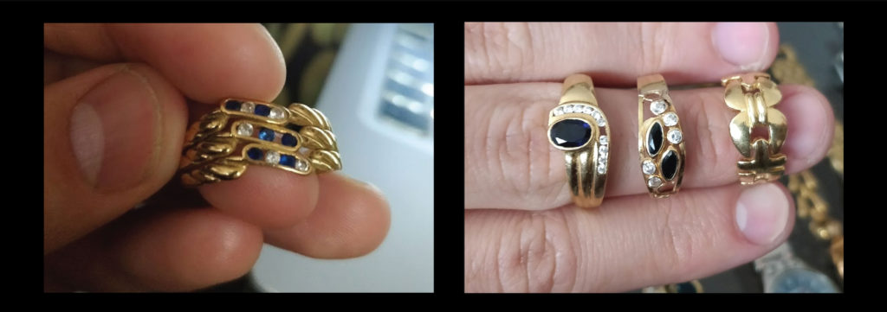
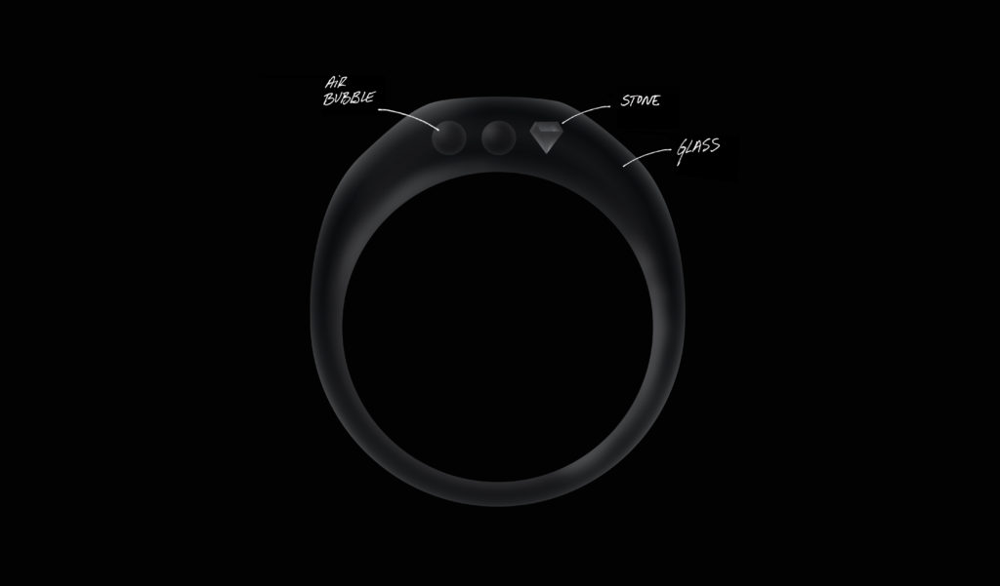
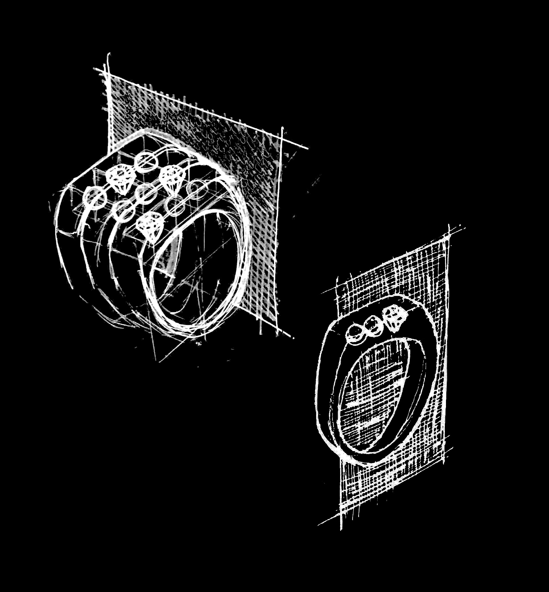
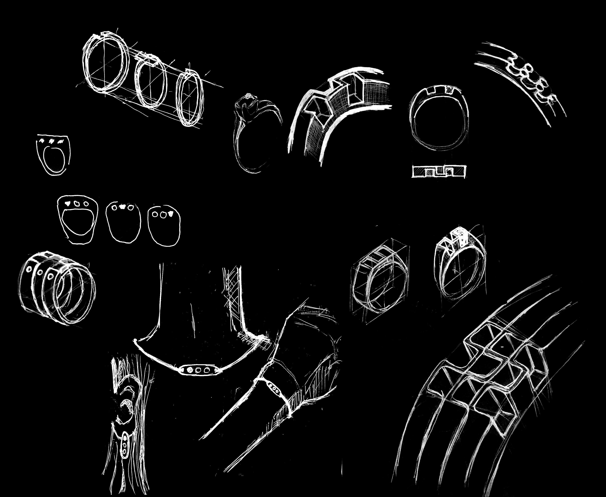

Nosotros
WHEN? Fall 2018
WHO? Tomás Cabezón
WHY? Contemporary Jewellery Design based on Glass Innovation Course
WHERE? 上海 Shanghai
In December 2017, unfortunately, my grandmother died. Part of her heritage were her jewels. In my family jewels are important because they help us carry close to us those who cannot be with us. For my cousin, my sister and I there were four rings. However, they were old-fashioned and didn’t represent what our grandparents and family supposed for us. We wanted something that would keep us together and remembered us what family is and what our grandparents taught us.
This was the starting point for this project, four rings and many ideas to put in such a little object. After a lot of thinking I realised that we where looking for something that would remind my cousin, my sister and I that we needed each other. That now that our grandparents were not with us and that we lived more separated than ever, we had to keep closer. Remind us that we are not without the others and that we should’t forget where we come from.
That’s how I came with the idea of the three circles representing each of us and one of them filled, saying that even when we are alone, we still have the other two. From here, I thought on glass, on how it can keep thing inside, preventing them from separating but still letting see through. That’s how NOSOTROS ring was born. It is a glass ring with two air bubbles and one of our grandmothers stones. This creates a perfect design that uses emptiness as an active element to represent that even when we are not together, we are three. On the other hand, it contains our grandmother’s stone, symbolising our roots, and the influence on each of us.
The name of the ring, NOSOTROS, is the Spanish word for “we” and ¨us¨. Which also represents the idea of this ring.


 